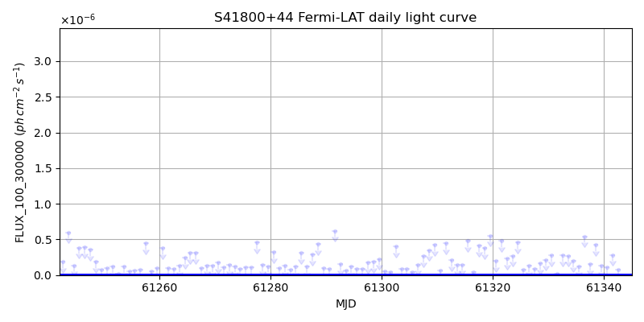
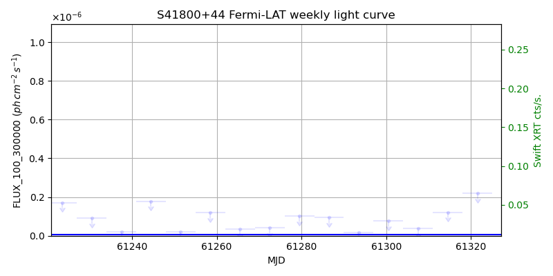
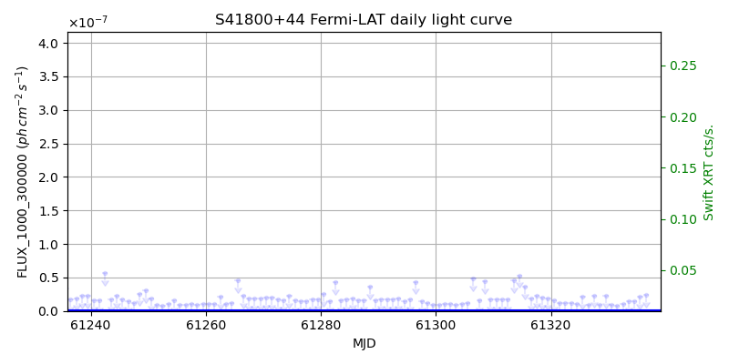
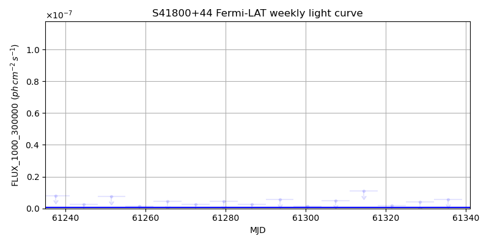

LAT Lightcurve site: https://fermi.gsfc.nasa.gov/ssc/data/access/lat/msl_lc/source/S4_1800p44
Swift site: https://www.swift.psu.edu/monitoring/source.php?source=S41800+44
NED: Query
Time of last update of this page: UT: 2026-10-24 15:24 (MJD: 61337.642)
| Property | Value |
|---|---|
| R.A. | 18:01:32.40 |
| Dec. | 44:04:22.8 |
| z | 0.663 |
| 3FGL SpectrumType | PowerLaw |
| 3FGL PL Index | 2.70 |
| 3FGL Flux_100_300000 | 2.39e-08 1 / (s cm2) |
| 3FGL Flux_1000_300000 | 4.82e-10 1 / (s cm2) |
| 3FGL Flux >200 GeV | 6.06e-14 1 / (s cm2) |
| 3FGL Extrap. Crab >200 GeV | 0.00 |
| 3FGL Flux After EBL Absorption >200GeV | 5.11e-15 1 / (s cm2) |
| 3FGL EBL Crab Fraction >200GeV | 0.00 |

| MJD | dMJD | Flux | dFlux | Frac3FGL | FracCrab>200GeV | EBLFracCrab>200GeV |
|---|---|---|---|---|---|---|
| 61332.50 | 0.50 | 2.80e-07 | 0.00e+00 | 0.00 | 0.00 | 0.00 |
| 61333.50 | 0.50 | 2.73e-07 | 0.00e+00 | 0.00 | 0.00 | 0.00 |
| 61334.50 | 0.50 | 2.01e-07 | 0.00e+00 | 0.00 | 0.00 | 0.00 |
| 61335.50 | 0.50 | 1.23e-07 | 0.00e+00 | 0.00 | 0.00 | 0.00 |
| 61336.50 | 0.50 | 5.43e-07 | 0.00e+00 | 0.00 | 0.00 | 0.00 |

| MJD | dMJD | Flux | dFlux | Frac3FGL | FracCrab>200GeV | EBLFracCrab>200GeV |
|---|---|---|---|---|---|---|
| 61300.50 | 3.50 | 7.58e-08 | 0.00e+00 | 0.00 | 0.00 | 0.00 |
| 61307.50 | 3.50 | 3.87e-08 | 0.00e+00 | 0.00 | 0.00 | 0.00 |
| 61314.50 | 3.50 | 1.21e-07 | 0.00e+00 | 0.00 | 0.00 | 0.00 |
| 61321.50 | 3.50 | 2.19e-07 | 0.00e+00 | 0.00 | 0.00 | 0.00 |
| 61328.50 | 3.50 | 9.84e-08 | 0.00e+00 | 0.00 | 0.00 | 0.00 |

| MJD | dMJD | Flux | dFlux | Frac3FGL | FracCrab>200GeV | EBLFracCrab>200GeV |
|---|---|---|---|---|---|---|
| 61332.50 | 0.50 | 9.95e-09 | 0.00e+00 | 0.00 | 0.00 | 0.00 |
| 61333.50 | 0.50 | 1.52e-08 | 0.00e+00 | 0.00 | 0.00 | 0.00 |
| 61334.50 | 0.50 | 1.45e-08 | 0.00e+00 | 0.00 | 0.00 | 0.00 |
| 61335.50 | 0.50 | 2.07e-08 | 0.00e+00 | 0.00 | 0.00 | 0.00 |
| 61336.50 | 0.50 | 2.37e-08 | 0.00e+00 | 0.00 | 0.00 | 0.00 |

| MJD | dMJD | Flux | dFlux | Frac3FGL | FracCrab>200GeV | EBLFracCrab>200GeV |
|---|---|---|---|---|---|---|
| 61300.50 | 3.50 | 1.57e-09 | 0.00e+00 | 0.00 | 0.00 | 0.00 |
| 61307.50 | 3.50 | 4.95e-09 | 0.00e+00 | 0.00 | 0.00 | 0.00 |
| 61314.50 | 3.50 | 1.10e-08 | 0.00e+00 | 0.00 | 0.00 | 0.00 |
| 61321.50 | 3.50 | 1.79e-09 | 0.00e+00 | 0.00 | 0.00 | 0.00 |
| 61328.50 | 3.50 | 4.06e-09 | 0.00e+00 | 0.00 | 0.00 | 0.00 |
--------------------------------------------------------- Using user-supplied coords: 18:01:32.40 44:04:22.8 2000 --------------------------------------------------------- FLWO UT night of: 2026-10-25 Local Sid. @ Midnight: 01:50 Sunset (-15.0) (local, UT): 18:49 01:49 Sunrise (-15.0) (local, UT): 05:27 12:27 Moonrise (local, UT): Moonset (local, UT): Moon phase: 0.99 --------------------------------------------------------- AzTime LSID UT Obj_el Obj_az Mn_el Mn_az Sep. --------------------------------------------------------- 18:49 20:39 01:49 57.0 303.4 26.2 94.5 93.4 19:19 21:09 02:19 51.6 302.5 32.4 98.6 93.4 19:49 21:39 02:49 46.2 302.5 38.6 103.2 93.4 20:19 22:09 03:19 40.9 303.2 44.7 108.4 93.5 20:49 22:39 03:49 35.5 304.3 50.6 114.6 93.5 21:19 23:09 04:19 30.3 305.9 56.2 122.3 93.5 21:49 23:39 04:49 25.2 307.8 61.2 132.2 93.5 22:19 00:09 05:19 20.2 310.1 65.5 145.3 93.5 22:49 00:39 05:49 15.4 312.7 68.4 162.2 93.6 23:19 01:10 06:19 10.9 315.6 69.4 182.2 93.6 23:49 01:40 06:49 6.6 318.8 68.2 202.0 93.6 00:19 02:10 07:19 2.6 322.4 65.1 218.6 93.6 00:49 02:40 07:49 -0.6 326.3 60.8 231.3 93.6 01:19 03:10 08:19 -3.5 330.6 55.7 240.9 93.7 01:49 03:40 08:49 -7.6 335.1 50.1 248.5 93.7 02:19 04:10 09:19 -10.1 340.0 44.3 254.6 93.7 02:49 04:40 09:49 -12.0 345.2 38.2 259.8 93.8 03:19 05:10 10:19 -13.3 350.5 32.1 264.4 93.9 03:49 05:40 10:49 -14.1 356.0 26.0 268.5 93.9 04:19 06:10 11:19 -14.2 1.6 19.9 272.4 94.0 04:49 06:40 11:49 -13.7 7.1 13.8 276.2 94.1 05:19 07:11 12:19 -12.6 12.6 7.8 279.9 94.2 05:27 07:18 12:27 -12.3 13.9 6.2 280.9 94.2 --------------------------------------------------------- Moon up all night, no dark time. Dark hours >55 deg.: 0.00